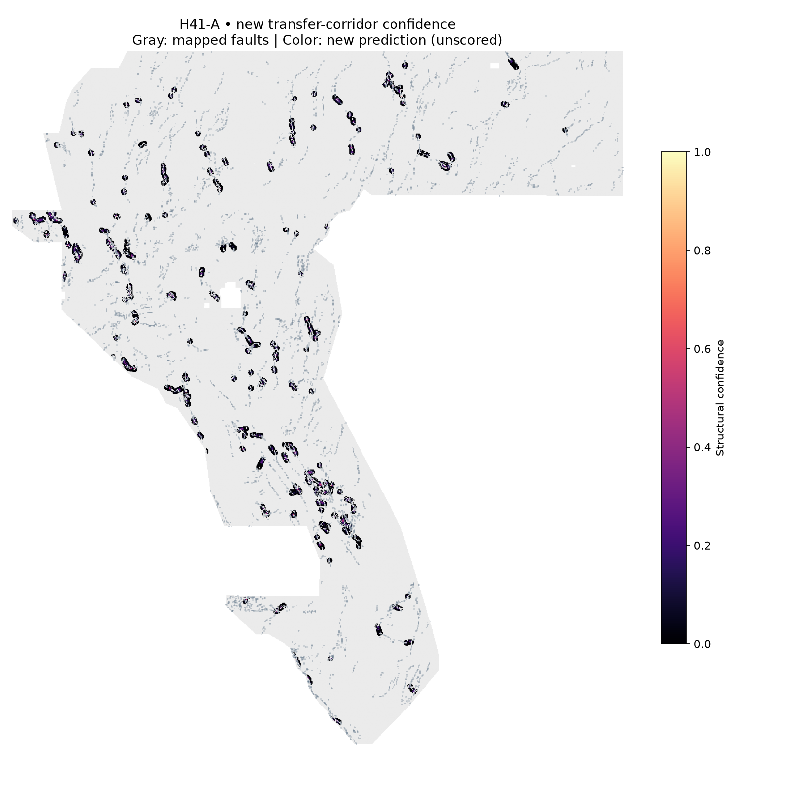

Separate the populations
Assign axial strike to NW or N/NNE geometry. Retain every classification, including ambiguous and source-slip-discordant traces.
A new fault-confidence map built from the space between two structural populations—not from an old submission.
Research candidate · submission gate closedOne band · float32 · EPSG:32611 · 100 m · 3292 × 3730 · all numeric cells in [0, 1]
Freshly generated artifact. Not organizer-scored. Do not spend a weekly slot on this version.

The model passes the format, novelty-versus-H33, and junction-concentration checks. It does not pass a meaningful generalization gate. Whole-trace withholding leaves almost no supported predictions inside the held-out blocks.
Read the complete failed experiment →Measured value: 0.000000e+00. Only fold 0 has nonzero prediction mass; folds 1–3 have none. Junction concentration is a design check, not independent discovery evidence.
The historical H33 raster is not a clean holdout comparator: its construction used the complete catalogue. No score-comparison claim is justified: 0.2778 is user-reported, and current leaderboard standings are unknown.
Assign axial strike to NW or N/NNE geometry. Retain every classification, including ambiguous and source-slip-discordant traces.
Find the nearest N/NNE receiver within 5 km of an outward-facing NW endpoint. Reject connected fragments and boundary tips.
Compare a topographic tangent proxy with the geometrically closer population. No new magnetic, gravity, thermal, or conductivity transform.
The static site serves the precomputed, verified model output. It does not claim to train a model in your browser.
Submission instructions →H41-A-R is the separate raster-based implementation preserved from PR #8; it is not the source-vector H41-A featured above. Its registered four-quadrant test found no eligible candidate support in 4/4 interiors, so its DTI is null/unevaluable—not zero—and it is not slot-eligible.
Unique tracking name: GEMSDOE41-H41A-RASTER-BIMODAL-TRANSFER
SHA-256: 5e8e528d105cf060490511a033c692f72dd761d09259fa7ae40c53dfc136e05f
↓ Download H41-A-R research GeoTIFF
Method, limitations, and evidence →
Variant-specific upload guide →
Download is for research/inspection only. Do not spend a submission slot until a candidate beats the locked spatial holdout best.
A browser-fetched 30-day snapshot of magnitude ≥1 events near the study area. Seismicity is context only—not proof of a fault, geothermal resource, or candidate truth.
Loading the live USGS event feed…
This feed contacts USGS ComCat directly. It never polls DrivenData or its leaderboard. If browser access is blocked, use the linked official query.